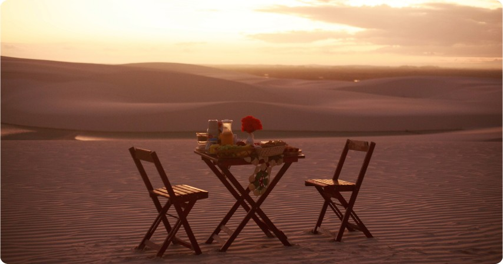
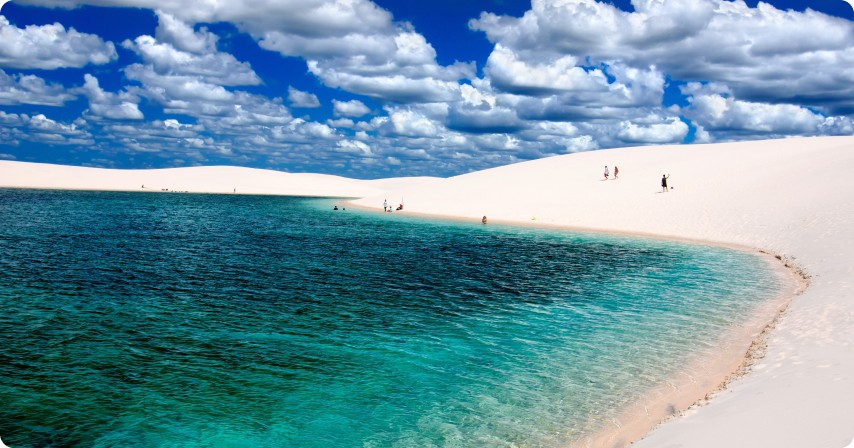
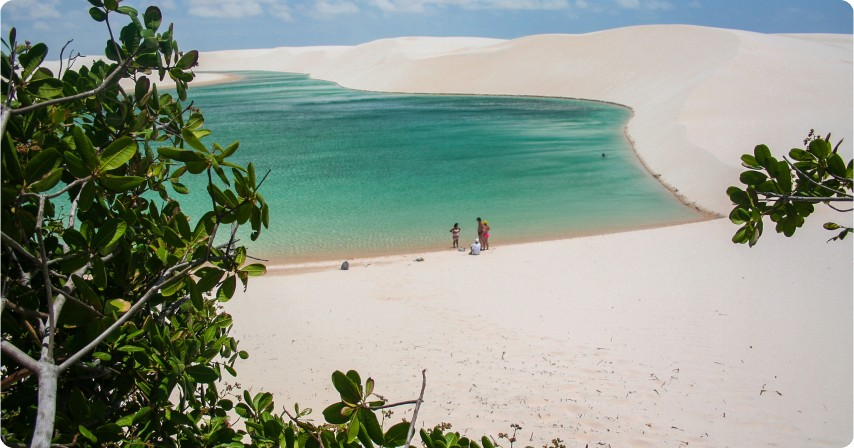
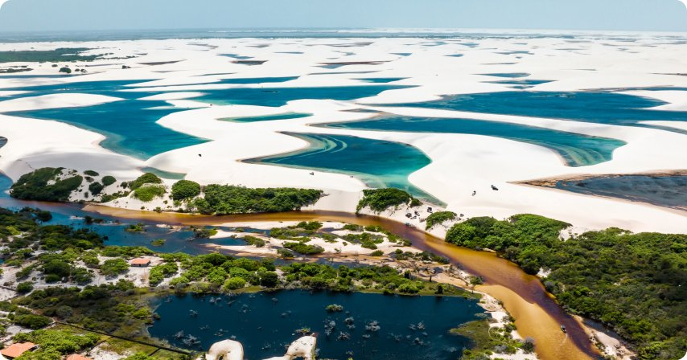
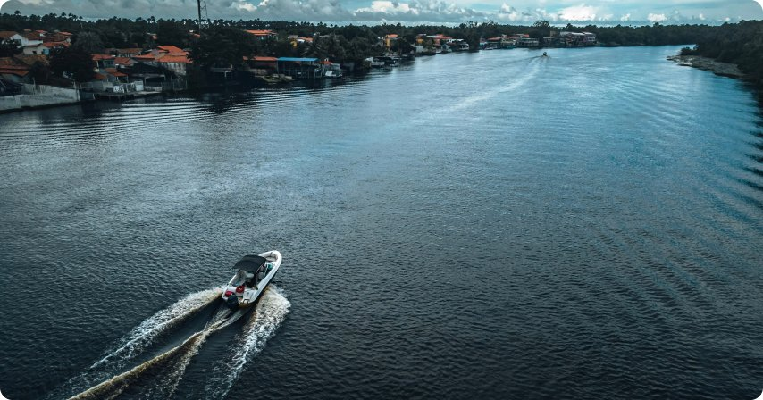
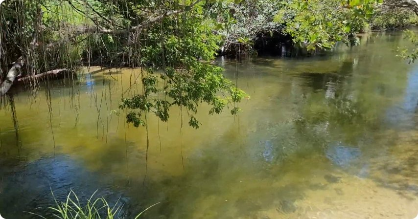
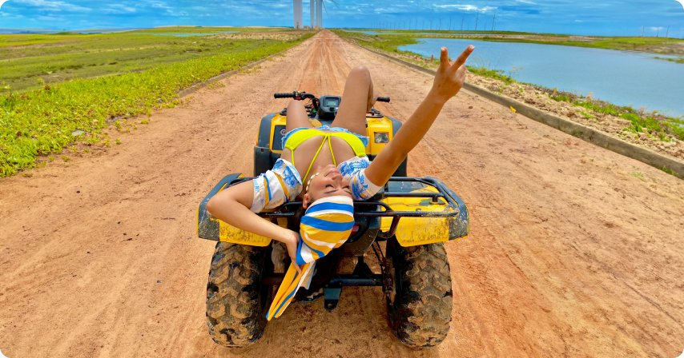
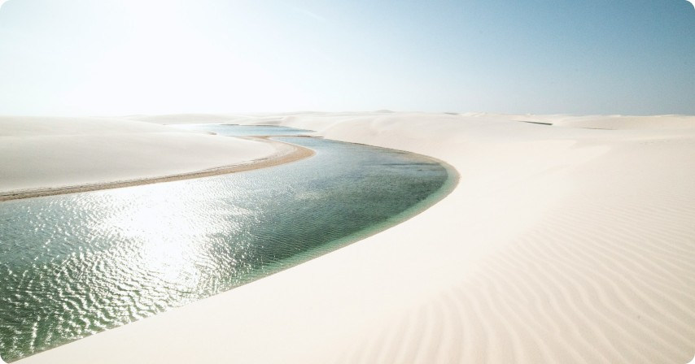

Passeio Nascer do sol
O Passeio Nascer do sol nos Lençóis Maranhenses é um dos mais belos a região. Esse passeio de meio período te leva para conhecer as lagoas belíssimas e paisagens deslumbrantes. O passeio privativo acontece na madrugada em torno das 04hs00m, na Toyota Jardineira (como é conhecida).
São 12km de trilha percorridos de toyota, chegamos ao Parque Nacional dos Lençóis Maranhenses, são 155 mil hectares, dunas e lagoas a perder de vista. Entre elas temos as principais como Lagoa Azul ou Lagoa da prata que serão serão visitadas depois de uma boa caminhada junto ao guia que irá passar algumas informações e tirar algumas duvidas.Pausa para o café da manhã nos Lençóis Maranhenses em quanto assistimos o nascer do sol que acontece por volta das 05h40.
Tempo livre para caminhada nas redondezas e banho nas lagoas. Retorno do passeio por volta das 07h da manhã chegando em Barreirinhas por volta das 08h.
OBS: Dependendo da época, este passeio pode ser compartilhado.
Passeio Lagoa Bonita
Passeio regular com embarque a partir das 13h30. Depois de passar na ultima pousada, a Toyota Jardineira (como é conhecida), faz uma pequena pausa em super mercado para quem quiser comprar água, lanche e etc. Saindo do super mercado, vamos direto para a balsa que atravessa o Rio Preguiças, aonde teremos a travessia do veiculo para outro lado do rio.
Depois da travessia, damos inicio ao passeio com emoção. São 12km de trilha de toyota, balançaremos um pouco a cada quilometro e vamos apreciando cada pedaço de vegetação. Depois dos 12km percorridos de toyota, chegamos ao Parque Nacional dos Lençóis Maranhenses, dunas e lagoas até onde a vista alcança. Teremos a principal, que é Lagoa Bonita e outras lagoas ao redor não demoninadas que serão serão visitadas depois de uma boa caminhada junto ao guia que irá passar algumas informações e tirar algumas duvidas. Por volta das 17h30 o guia retorna com o grupo para a primeira duna, uma das mais altas pra dali todos assistirem o por do sol.
Depois o por do sol, teremos o retorno dos mesmos 12km até a balsa. Antes da travessia, e os deixaremos na pousada com o restante da noite livre.
Passeio Lagoa Azul
Esse passeio de meio período te leva para conhecer a Lagoa Azul e seus arredores. O passeio compartilhado acontece Pela manhã entre as 08h e 09h. Depois de passar na ultima pousada, a Toyota Jardineira, faz uma pequena pausa em super mercado para comprar água, lanche e etc. Saindo do super mercado, vamos direto para a margem do Rio Preguiças aonde teremos a travessia do veiculo para outro lado do rio.
Depois da travessia, damos inicio ao passeio com emoção. São 12km de trilha de toyota, balançaremos um pouco a cada quilometro e vamos apreciando cada pedaço de vegetação. Depois dos 12km percorridos de toyota, chegamos ao Parque Nacional dos Lençóis Maranhenses, são 155 mil hectares,dunas e lagoas até onde a vista alcança. Entre elas temos as principais como Lagoa Azul e dos Peixes que serão serão visitadas depois de uma boa caminhada junto ao guia que irá passar algumas informações e tirar algumas duvidas.
Retorno para o veiculo entre 13h00 e 13h30 com chegada prevista para 14h30.
Passeio Santo Amaro-MA
Embarque pela manhã entre 08h e 09h da manhã com destino a Santo Amaro. Percurso em van ou 4x4 de 100km onde faremos em aproximadamente em 1h20 até a cidade de Santo Amaro em nosso ponto de apoio. Parada no restaurante da cidade para pedir almoço (não incluso). Logo após as orientações, iniciaremos o passeio acompanhado por guia local em português pelo Parque Nacional dos Lençóis Maranhenses com visita a Lagoa da Gaivota e Andorinha. Durante o percurso haverá tempo suficiente para fotos e banho nas lagoas.
Retorno do passeio 13h00 para o almoço. Logo após, tempo livre para descanso e depois seguiremos para Barreirinhas. chegada em Barreirinhas no final do dia por volta das 16h30.
Passeio de Lancha Barreirinhas
Partida pela manhã, aproximadamente entre 08h e 08h30, para um passeio de lancha pelo Rio Preguiças. Antes da partida, o piloto fornecerá informações sobre o itinerário. Durante o passeio, faremos três paradas:
O primeiro Local Na Tenda dos Macacos em Vassouras, uma área com dunas, rio e manguezais, onde passaremos cerca de 45 minutos explorando. Há uma estrutura para a compra de água de coco e artesanato, além de macaquinhos curiosos que costumam receber os visitantes.
O segundo local No Farol da Marinha em Mandacaru, que possui 166 degraus que valem a pena subir para apreciar a vista panorâmica dos Grandes Lençóis, Pequenos Lençóis e a Praia de Caburé. O local também abriga diversas lojas de artesanato.
O terceiro e ultimo local Na Península de Caburé (Praia de Caburé), um extenso banco de areia que separa o Rio Preguiças do Oceano Atlântico. Aqui, é possível desfrutar de um banho de mar ou rio. A área é bastante procurada por amantes de esportes, e é possível alugar quadriciclos (Não incluso) para passear ao longo da praia. O almoço (não incluso) pode ser desfrutado nos restaurantes locais, que oferecem um cardápio variado com base em peixe.
O retorno do passeio está será entre 14h00 e 14h15, com uma viagem de volta de aproximadamente 1 hora e 15 minutos até Barreirinhas.
Passeio Boia Cross Cardosa
Saída do hotel entre 8:00 e 9:00 para o povoado chamado São João da Cardosa, com parte do percurso em asfalto e, em seguida, uma estrada de piçarra, passando por uma trilha no meio da Chapada Maranhense, como é conhecida pelos nativos. Durante o trajeto, é possível observar pés de Bacuri, Pequis e outras plantas nativas da região. Ao chegar à acolhedora comunidade, inicia-se a descida pelo Rio Formigas em boias, proporcionando cerca de uma hora de corredeiras. Durante a flutuação, os participantes podem relaxar em águas cristalinas, observando a vegetação local e os ribeirinhos da região. O veículo aguardará os clientes no local de chegada, onde podem aproveitar um pouco mais do banho no rio antes do retorno a Barreirinhas.
Retorno do passeio por volta das 11h30 chegando em Barreirinhas por volta de 13h.
Passeio de Quadriciclo Barreirinhas
O melhor passeio, este tem uma duração do dia inteiro, começamos o embarque do passeio entre 08h e 09h da manhã, com término por volta das 17h. Neste passeio conhecemos os pequenos lençóis (povoado de Vassouras, tenda dos macacos), passamos também pelo parque eólico e vamos até a península de Caburé.
A saída é por volta das 09hs00 da manhã, o guia vai até o hotel ou pousada em que o cliente está hospedado com a maquina, lá mesmo acontece o treinamento para pilotar. Os guias são experientes e trinados o que faz a aula ser bem rápida, sem falar que não é difícil aprender… É preciso seguir todas as orientações de segurança para evitar acidentes durante o trajeto e bebidas alcoólicas não são permitidas no passeio. Todos devem comprar água e um lanche, o guia terá uma caixa térmica para guardar tudo. Logo depois da aula de pilotagem, sairemos para o passeio em uma trilha. Seguiremos o trajeto em fila com o guia orientando.
Teremos uma paisagem verde, uma aventura única de aproximadamente 01h20 até chegar as dunas dos Pequenos Lençóis. A paisagem desse lado é espetacular que junta a beleza e a sensação de pilotar essa maquina dentro da região.
O local de apoio é conhecido como a tenda dos macacos em Vassouras aonde teremos a mistura de mangue, dunas e rio. No local da para comprar água de côco, artesanato e etc. Ficaremos em torno de 45 minutos no local para caminhada e fotos.
Logo depois, teremos mais 01h30 de lindas paisagens paisagens até chegar a praia de caburé onde será o principal ponto de parada. Tempo livre para almoço e banho de praia.
Saída da praia de caburé por volta das 14h com destino a Barreirinhas. Chegada em Barreirinhas pode variar entre 17h e 18h.
Passeio Atins e Canto do Atins
Saída pela manhã entre 08h e 09h, em veículo 4×4 em direção ao Parque Nacional dos Lençóis Maranhenses. Logo no inicio é necessário atravessar o Rio Preguiças em uma balsa para acessar a trilha que nos leva até o Povoado de Atins.
Durante a viagem veremos os pequenos vilarejos com seus moradores e sua vida simples e pacata em meio natureza. Também veremos parte da Morraria, nome dados pelos mais antigos moradores de Barreirinhas a esse maravilhoso monumento natural de imensas dunas. Chegando em Atins, desfrutaremos dessa vila de pescadores, a Foz do Rio e Preguiças e a maravilhosa Praia de Atins que é praticamente deserta.
Depois percorremos em meio a vila para pegarmos a trilha que nos leva ao Canto do Atins. Esse lugar que está localizado entre o mar e as dunas dos Lençóis Maranhenses e possui dois restaurantes famosos.
Depois de visitar o Canto do Atins seguimos de carro até o ponto que o ICMBio nos permite, desse ponte em diante continuamos na caminhada até as lagoas da região na época cheia.
Logo após desfrutarmos do banho refrescante voltamos ao Canto onde faremos a pausa para o almoço (não incluso). Após o almoço teremos uma pequena pausa para descanso para então retornarmos. Chegada em Barreirinhas por volta das 17h.